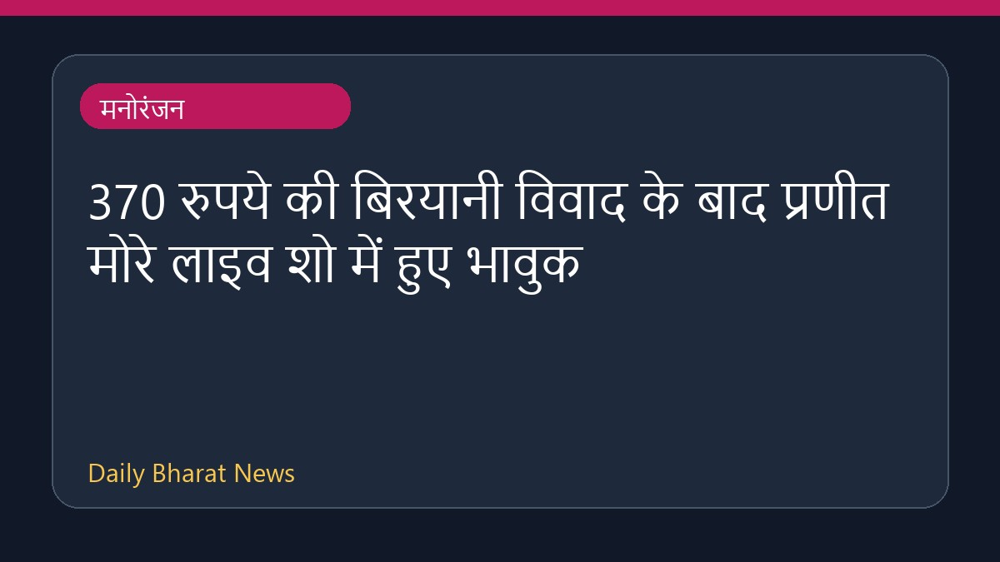

370 रुपये की बिरयानी विवाद के बाद प्रणीत मोरे लाइव शो में हुए भावुक

370 रुपये की बिरयानी वाले विवाद के बाद प्रणीत मोरे ने अपने पहले लाइव स्टैंड-अप शो के दौरान मंच पर वापसी की। इस दौरान वे काफी भावुक नजर आए और उनकी आँखें नम हो गईं। उन्होंने दर्शकों के सामने अपनी चिंता जाहिर करते हुए कहा कि क्या लोग उन्हें दोबारा स्वीकार करेंगे। हालांकि, शो के दौरान दर्शकों ने उन्हें खड़े होकर सम्मान यानी स्टैंडिंग ओवेशन दिया, जिसके बाद प्रणीत ने एक और मौका देने के लिए सभी का आभार व्यक्त किया।